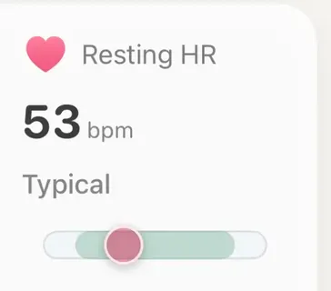

Guide
A normal resting heart rate is a wide band, not a single number. The textbook adult range is 60 to 100 beats per minute (bpm), yet healthy people sit anywhere from the 40s to around 100, and trained runners usually sit low in that spread. What tells you most is your own number against your own usual, over days rather than one morning.
Below: how Apple Watch arrives at the figure, what the ranges do and do not say, why runners read lower, what pushes it up, and when it is worth a call to a doctor.
Apple's HealthKit documentation describes resting heart rate as an estimate of your lowest heart rate during periods of rest. It is not simply a reading taken when you sit down, which after a workout can still run high. The system estimates it from the readings it takes while you are still, throughout the day, and may replace earlier values as the estimate improves. That is why today's number can shift by evening.
Resting heart rate is not the same as your heart rate while asleep, which usually runs lower still. That overnight figure has its own field note: what sleeping heart rate is.
The American Heart Association gives 60 to 100 bpm as the normal range for most adults. That range is a convention rather than a measured norm. Spodick and colleagues (1992) argued that 50 to 90 bpm fits healthy adults better, and the gap shows how loose the edges are.
Wearable data makes the point sharper. Quer and colleagues (2020) looked at nearly 33 million days of resting heart rate from 92,457 adults wearing Fitbit trackers. The average was 65 bpm, but personal averages ran from about 40 to 109 bpm. One healthy person's normal could differ from another's by as much as 70 bpm, and age, sex, body mass and sleep together explained only a small part of that spread. Women read a few beats higher than men at every age.
So 52 or 78 is not good or bad on its own.
There is no target number, but the direction is well documented. A review of 191 exercise studies (Reimers and colleagues, 2018) found that training lowers resting heart rate, with endurance training showing a clear drop in both men and women. A fitter heart moves more blood per beat, so it can settle slower at rest. Work in mice (D'Souza and colleagues, 2014) suggests part of the slowing also comes from changes in the heart's own pacemaker, not only from calmer nerves.
A low resting heart rate is not a score to chase.
That is why trained runners often read in the 50s or below, and why a reading in the 40s is not unusual in healthy, fit people and is no worry on its own. A low number is not a score to chase. The useful sign is your own rate drifting down a few beats across a training block.
The same wearable study found that each person's resting heart rate is far steadier than the spread between people. Day to day it moved by about 3 bpm on average, and most people's weekly swings stayed under 10 bpm. There was also a small seasonal drift of about 2 bpm across the year, highest in early January (Quer and colleagues, 2020).
Wide between people, narrow within one
That is why your own usual is the reference that matters (more in why a watch should compare you to yourself). A rise of 5 beats over several days means more than any chart line. Still, resting heart rate is a fairly blunt training signal: Buchheit (2014) found it noisier than HRV for tracking fatigue, and in long-trained athletes heavy fatigue can even come with a lower rate. Read it alongside your Apple Watch HRV and how you feel.
If your number has gone up, the reason is usually recent and ordinary:
Patterns for a single high morning versus a run of them are covered in why is my resting heart rate up?
At rest, the optical sensor does reasonably well. Against a chest strap, Apple Watch resting heart rate was off by about 3.7 bpm on average, with almost no overall bias (O'Grady and colleagues, 2024). Wrist sensors are least accurate during movement: error was about 30% higher during activity than at rest across several devices (Bent and colleagues, 2020). Treat a change of 1 or 2 beats as noise, and look for shifts that last.

Resting heart rate in AeraThe tile holds the resting heart rate from Apple Health against your own last two weeks and says Typical, Above your usual or Notably high (or the same downward). With fewer than seven days of readings it says Building baseline.
Aera, for iPhone and Apple Watch
Aera reads the resting heart rate your Apple Watch saves to Apple Health and holds it against your own usual from the last two weeks. The Resting HR tile on Home then says Typical, Above your usual or Notably high (or the same downward), with a seven-day sparkline beside it. Until it has at least seven days of readings, it says Building baseline instead of guessing.
The Sleep screen does the same for your heart rate while asleep, against your last 28 nights, and says whether last night ran above, about or below your usual once it has two weeks of nights. Aera never grades your resting heart rate on a population chart. The tile links to a Field Guide section on what moves resting heart rate and when the reading is cleanest. There is no account, and health numbers are worked out on your iPhone. Your resting heart rate against your usual is free, as is the last 12 months of history.
Aera is not a medical device.
The usual adult range is quoted as 60 to 100 beats per minute, but healthy people spread much wider. In data from 92,457 wearable users, personal averages ran from about 40 to 109 bpm, with a mean of 65. A normal resting heart rate is one that sits steady inside your own usual range.
There is no target number. Endurance training tends to lower resting heart rate over weeks and months, so trained runners often read in the 50s or below, and values in the 40s are not unusual and need no worry without symptoms. The useful sign is your own number drifting down across a training block.
Usually something recent: an illness starting, alcohol, a hard training block, heat, a short night, dehydration or a stressful stretch. One high day is mostly noise. Several days above your usual, especially with feeling unwell, is the pattern worth noticing.
If your resting heart rate stays above 100, or sits below 50 and comes with dizziness, fainting, unusual tiredness, chest pain or breathlessness, talk to a doctor. Also if it rises well above your usual and stays there with no clear reason. A watch reading is not a diagnosis.
Related field notes: why is my resting heart rate up? · what sleeping heart rate is · why a watch should compare you to yourself · what a consumer watch cannot measure
Related guides: Apple Watch HRV: what is normal? · Should I run after a bad night's sleep?